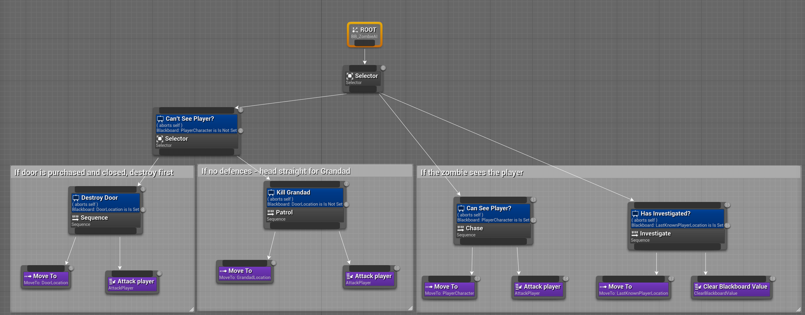
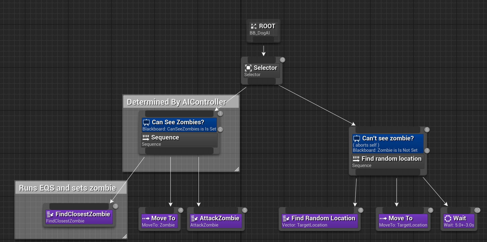
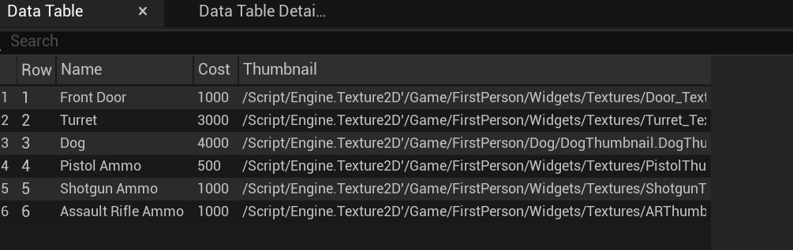

Defend Grandad
Overview

A round-based zombie FPS made solo in Unreal Engine 5 and C++. Grandad can’t move, so you defend him from waves of zombies while exploring the map for weapons and perks.
Apart from the 3D models, animations and sound effects, I built everything.
Built with
Timeframe
Code Highlights
The best places to start in the source code. Each link opens the file on GitHub at the relevant function.
Dismemberment
Zombie.cpp · OnBodyPartBeginOverlap
One overlap handler for every hit box, with per-limb health. Limbs are removed by hiding bones and spawning Niagara effects instead of expensive mesh slicing.
View code →Zombie AI
ZombieAIController.cpp · EnemyDetected
Event-driven targeting through AI Perception and the blackboard: chase the player, check their last known location, then go back to the door or Grandad.
View code →Async EQS task
BTTask_FindClosestZombie.cpp
A latent behaviour tree task shared by the dog and turret. It runs an EQS query, finishes when the result comes back, and is instanced per AI.
View code →Player state machine
PlayerCharacter/States/
The state pattern for Idle, Aiming, Fire, Reloading and Swapping. Each state owns its rules, and the character reuses one instance of each.
View code →Wave spawning
ZombieGameMode.cpp · SpawnZombies
Wave scaling with boss rounds every fifth wave, and sphere-swept ground placement with a capped number of attempts, configurable in the editor.
View code →Game Mode
Defend Grandad
Zombies head for Grandad by default, but switch to the player when they see them. Each wave sends more zombies. Survive the final wave to win; if you or Grandad die, it’s game over.
Explore and earn points
Shooting zombies earns points: 100 for a headshot and 50 anywhere else. Spend them on weapons and perks in the houses around the map, or at Grandad’s shop. Leave Grandad alone for too long, though, and the zombies will get him.
Spawning and boss waves
Zombies spawn on open ground using sphere sweeps, which find the landscape far more reliably than line traces. Every fifth wave is a boss wave of fire zombies that deal double damage.
View code →Weapons
Pistol, shotgun and assault rifle
Each weapon fires its own projectile, so they differ in damage, fire rate and bullet drop. More weapons are found around the map, and you can swap between them.
Player state machine
Idle, aiming, firing, reloading and swapping are each a state class, so rules like “no aiming mid-reload” live in one place instead of in the character.
View code →AI
Zombies
Zombies use AI Perception (sight). When they see the player they chase them; when they lose sight, they search the last known location, then go back to Grandad. If the player has bought a front door and it’s closed, they break it down first.
View code →
Zombie behaviour tree
The AI controller reacts to perception events and sets blackboard keys, and the behaviour tree uses them to pick a target: the player, their last known location, the door or Grandad.

Dog and turret
Both can be bought from the shop and share one AI controller. They use EQS to find the closest zombie they can see. The dog wanders nearby until it spots one; the turret stays put and fires.
View code →Dismemberment
Heads, arms and legs
Each limb has its own health. When it runs out, the bone is hidden and a Niagara blood effect plays, which is much cheaper than slicing the mesh. A zombie can only lose one arm, so it can always still attack, and losing its legs makes it crawl.
View code →Hit boxes
Each body part has a collision box attached to its bone. They all share one overlap handler, which works out which part was hit.
Shop
Grandad’s shop
Walk up to Grandad to open his shop and buy a front door for the house (the zombies destroyed the last one), ammo, a turret or even a dog.

Data-driven items
Shop items are defined in a data table, and the shop widget builds its grid from it at runtime, instead of each item being placed in the UI by hand.
View code →